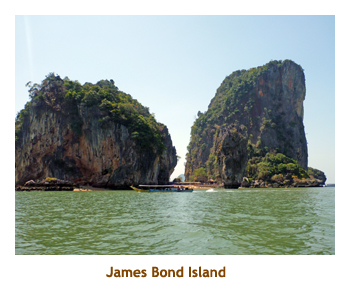

[ Home ] [ Travel ] [ Photography ] [ Pets ] [ Games] [ Rowing] [ Physics ]


Cruising on the Sapphire Princess
Travel
Cruises
Past Cruises (Diaries)
Future Cruises
Rogues Galleries
Land Trips
Diaries (Land Trips)
Hawai'i - Big Island - 04'01
Hawai'i - Maui - 05'02
Hawai'i - Big Island - 04'03
Hawai'i - Kaua'i - 09'04
Hawai'i - Big Island - 04'06
Hawai'i - Maui - 04'06
Mainland China - 05'07
Phoenix, Arizona - 12'07
Greek Isles - 05'08
Hawai'i - Kaua'i - 09'08
Hawai'i - Big Island - 09'09
Hawai'i - Maui - 05'12
Hawai'i - Big Island - 04'13
Ireland - 08'13
Mexico - Cancun 11'13
France/Belgium/Lux 07'15
Hawai'i - Big Island - 05'17
England / Wales - 06'17
Hawai'i - Big Island - 09'19
Photography
Cameras
Underwater
Pets
Tara
Blackie
Whitey
Muffy
Ollie
Rusty
Fluffy
Rufus&Dufus
Games
Rowing
Physics
Rating (out of 5):
Ship  Food
Service
Itinerary
Food
Service
Itinerary
This cruise plus the subsequent B2B cruise made up a wonderful 15 day trip around SE Asia. Every port (and country) was new to us. Another first for us was the routing of our flights. We cashed in Aeroplan points for free flights and could only get eastern bound flights. So, our total flight package took us from Calgary to London to Singapore to Tokyo and back to Calgary. The flight distance was about 20,000 miles, taking some 36 hours in the air and wrapping right around the globe. On our first leg the time zone change plus the distance travelled meant that we left Calgary on Feb 20 and landed in Singapore on Feb 22!
The ship was full, with about 2,800 passengers. The first 5 day leg of the trip consisted of
mainly of Chinese and Australians. There was a sharp contrast as the Aussies are very
outgoing, while the Chinese kept to themselves. As a result, we met quite a number of Aussies, while
we never actually met any Chinese. We got the usual Elite perks which were great. We had 250
internet minutes each (didn't use it all!), a free mini-bar setup and free laundry (which we didn't
use as Marjorie likes to do her own).
Pre-cruise (Feb 20, 22) - Travelling to Singapore
Day 1 (Feb 23) - Boarding in Singapore
Day 2 (Feb 24) - A day in Kuala Lumpur, Malaysia
Our next stop was at Merdeka (Independence) Square and the Royal Selangor Polo Club. The square hosts what was once the tallest flagpole in the world (so they say). After some time to walk around the square and onto the green at the polo club, we reboarded the bus and drove to a war memorial commemorating WWI, WWII and the Malaysian war of independence. The gardens and memorials were all very nice. Finally we drove to a photo spot from which to see the Petronas Towers. On some of the tours they included a hike up the towers for the view, but ours was only a photo spot from afar. We did the hour plus drive back to the port and were on the ship by 1:30 for lunch in the buffet. There was no MDR lunch on port days. We went back to our cabin to read on our balcony. Trivia was at 4:15 and was almost empty as most people were still off of the ship or tired from excursions. Marjorie and I played as a team of 2 and scored 18/20. Woohoo! It was formal night but Marjorie and I weren't too hungry (late lunch) and headed up to the buffet. The buffet was packed - I've never seen it so busy at dinner time. A lot of Chinese were there, probably because the "Caucasian" MDR menu did not appeal to them. A "where am I?" trivia was at 7:00 and again Marjorie and I did the twosome thing. We won a bottle of champagne. I wish we liked champagne! We were still a bit grogged from the time difference, so did the early bed thing again.
 |
Day 3 (Feb 25) - The Island of Penang, Malaysia
The next stop on the tour was at a butterfly farm. We walked through an enclosed garden with hundreds of butterflies. It was amazing. In this climate they didn't need any heating or humidification. I presume that a number of the butterflies were local varieties. Then it was lunch time. We were taken to a hotel with an excellent buffet. They had wi-fi so we did our email thing on the tablet. Afterwards we were driven to a village that had two adjacent Buddhist temples - one a Thai temple and the other a Burmese temple. The Thai temple enclosed the world's fourth largest reclining Buddha. The Burmese temple complex included a four story pagoda which offered great views of the surrounding area. Both temples were very ornate with lots of gold. Our final stop was back in George Town at a house (mansion) owned by a Chinese Kapitan - Baba Nyonya. It was a two story square building with an inner courtyard. The house was part of a group of several mansions, most of which were museums now. After a drive through George Town, we were back to the ship by 4:00 PM. We showered and read until dinner. For dinner I had beef fillets. They were very good. We shared our champagne with our table mates and sent the rest to the cooler for another night. We wandered the ship for a while and then headed to bed. The clocks were set back one hour tonight.
Day 4 (Feb 26) - Around Phuket, Thailand
We were up at 5:30 as we were anchoring at that place that I'm always afraid
of pronouncing incorrectly - Phuket (poo-kette) Town on
Phuket Island. Fortunately we had gained
an hour overnight, so it didn't really seem so early. We had breakfast in the buffet
and headed off to our 6:30 tour. For some reason the tours were delayed, plus we
had to tender to shore, so we weren't aboard our bus until 8:00 AM. We drove
through the town. What intrigued me was the mass (rats nest?) of telephone
wires running both sides of the streets. We would see this in many of the SE
Asian towns. We motored
north for 1.5 hours, crossing a bridge from the island onto the mainland province
of Phang-nga. There we boarded a small covered boat and sailed out into
Phang Nga Bay. The scenery was awesome with rocky islands reaching straight
up from the water. After about an hour we finally circled James Bond Island
(where some of "Man With the Golden Gun" was filmed).
|  |
On the way back, we stopped at a Muslim floating village (Koh Panyee) and spent about an hour to walk around the village. It was much larger than it looked from the water and housed about 1,700 people. We walked through the commercial area (restaurants, shops, etc.) and even visited an elementary school. It was very interesting. Then it was time for the 1.5 hour drive back to Phuket Town. As we left on the bus about 1:30 we were given Subway sandwiches and a drink to eat along the way. Just outside of Phuket Town we stopped at a huge jewelry and souvenir store (Wang Talang). We were very warm from the heat and humidity, and not really interested in gems, so we whizzed through the displays to the cafeteria where they were giving out free drinks. It was air conditioned and felt heavenly. We were back to the ship by 4:00 PM. There was a grocery store just across the street from the tender dock, so we popped over and got a 4 pack of Chang beer. We didn't have any Thai money, so used a money exchange right next door to the grocery store. We had a bit of a wait for the tender and then motored back to the ship. We showered and read for a while. For dinner I had diver scallops - yummy - and the rest of our champagne. I thought it would lose its fizz overnight, but not so. We sat at a table for 6 hoping to share, but no sharing folks came in. Big table for two of us! We used the internet for a while, wandered the ship and then went to bed.
Day 5 (Feb 27) - A day at sea
Day 6 (Feb 28) - Back to Singapore
 |
|||
Our next part of the tour was a drive through China town. Along the way we drove past the famous Raffles Hotel. We were a bit behind schedule, so we didn't get as long in China town as we had hoped. We did one stop where we walked a block or so to a Buddhist temple. There were lots of traces of the recent Chinese New Years celebrations, including "lucky money" strung across the streets. We entered the huge temple which was very ornate inside. Lots of statues and orchids. We were back to the ship about 1:30. As we reboarded, we had to hand in our passports (again) and our landing cards. We had lunch in Alfredo's Pizzaria - best pizza afloat!
Note: I've always enjoyed the pizzaria restaurant found on many Princess ships but this is being replaced (at least on the Sapphire) to a sushi bar as they continue to address the Asian market.
Walking back to our cabin,
it was a ship full of strangers that we saw. This leg it was mostly Aussies that joined us. Maybe
we should have kept our anytime dining option? We sat on our balcony and read for a while.
I slipped away to the gym for a workout and was back before supper time. We headed to
our new MDR table for eight and discovered two ladies (sisters) there. No one else showed up.
Shades of the previous cruise? Speaking of the previous cruise, it's time to make a break here
and end the tale of our first 5 days.
For the continuation of our SE Asian cruise, please visit the SE Asia Part II trip diary.